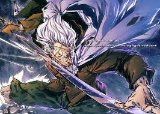

This is Silvers Rayleigh. He is the first mate on Gol D. Rogers crew: aka King of the pirates. He Uses all three types of haki and is known as one of the strongest charaters in the world of One Piece.Reyleigh also trains the young future king of the Pirates Luffy.
Here are some of my Favorite clips of Rayleigh
HOPE YOU ENJOYED!